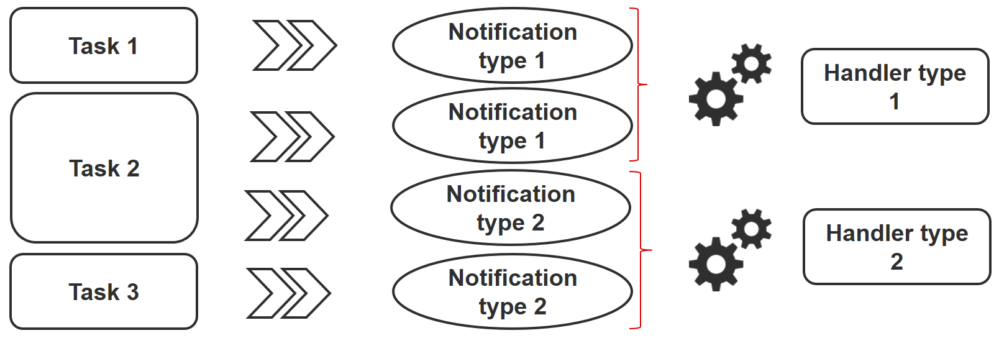

Ansible Intermediate¶
In this chapter you will continue to learn how to work with Ansible.
Objectives : In this chapter you will learn how to:
 work with variables;
work with variables;
use loops;
manage state changes and react to them;
manage asynchronous tasks.
 ansible, module, playbook
ansible, module, playbook
Knowledge: 
Complexity:
Reading time: 30 minutes
In the previous chapter, you learned how to install Ansible, use it on the command line, or how to write playbooks to promote the re-usability of your code.
In this chapter, we can start to discover some more advanced notions of how to use Ansible, and discover some interesting tasks that you will use very regularly.
The variables¶
Note
More information can be found here.
Under Ansible, there are different types of primitive variables:
- strings,
- integers,
- booleans.
These variables can be organized as:
- dictionaries,
- lists.
A variable can be defined in different places, like in a playbook, in a role or from the command line for example.
For example, from a playbook:
---
- hosts: apache1
vars:
port_http: 80
service:
debian: apache2
rhel: httpd
or from the command line:
$ ansible-playbook deploy-http.yml --extra-vars "service=httpd"
Once defined, a variable can be used by calling it between double braces:
{{ port_http }}for a simple value,{{ service['rhel'] }}or{{ service.rhel }}for a dictionary.
For example:
- name: make sure apache is started
ansible.builtin.systemd:
name: "{{ service['rhel'] }}"
state: started
Of course, it is also possible to access the global variables (the facts) of Ansible (OS type, IP addresses, VM name, etc.).
Outsourcing variables¶
Variables can be included in a file external to the playbook, in which case this file must be defined in the playbook with the vars_files directive:
---
- hosts: apache1
vars_files:
- myvariables.yml
The myvariables.yml file:
---
port_http: 80
ansible.builtin.systemd::
debian: apache2
rhel: httpd
It can also be added dynamically with the use of the module include_vars:
- name: Include secrets.
ansible.builtin.include_vars:
file: vault.yml
Display a variable¶
To display a variable, you have to activate the debug module as follows:
- ansible.builtin.debug:
var: "{{ service['debian'] }}"
You can also use the variable inside a text:
- ansible.builtin.debug:
msg: "Print a variable in a message : {{ service['debian'] }}"
Save the return of a task¶
To save the return of a task and to be able to access it later, you have to use the keyword register inside the task itself.
Use of a stored variable:
- name: /home content
shell: ls /home
register: homes
- name: Print the first directory name
ansible.builtin.debug:
var: homes.stdout_lines[0]
- name: Print the first directory name
ansible.builtin.debug:
var: homes.stdout_lines[1]
Note
The variable homes.stdout_lines is a list of variables of type string, a way to organize variables that we had not yet encountered.
The strings that make up the stored variable can be accessed via the stdout value (which allows you to do things like homes.stdout.find("core") != -1), to exploit them using a loop (see loop), or simply by their indices as seen in the previous example.
Exercices¶
-
Write a playbook
play-vars.ymlthat prints the distribution name of the target with its major version, using global variables. -
Write a playbook using the following dictionary to display the services that will be installed:
service:
web:
name: apache
rpm: httpd
db:
name: mariadb
rpm: mariadb-server
The default type should be "web".
-
Override the
typevariable using the command line -
Externalize variables in a
vars.ymlfile
Loop management¶
With the help of loop, you can iterate a task over a list, a hash, or dictionary for example.
Note
More information can be found here.
Simple example of use, creation of 4 users:
- name: add users
user:
name: "{{ item }}"
state: present
groups: "users"
loop:
- antoine
- patrick
- steven
- xavier
At each iteration of the loop, the value of the list used is stored in the item variable, accessible in the loop code.
Of course, a list can be defined in an external file:
users:
- antoine
- patrick
- steven
- xavier
and be used inside the task like this (after having include the vars file):
- name: add users
user:
name: "{{ item }}"
state: present
groups: "users"
loop: "{{ users }}"
We can use the example seen during the study of stored variables to improve it. Use of a stored variable:
- name: /home content
shell: ls /home
register: homes
- name: Print the directories name
ansible.builtin.debug:
msg: "Directory => {{ item }}"
loop: "{{ homes.stdout_lines }}"
A dictionary can also be used in a loop.
In this case, you will have to transform the dictionary into an item with what is called a jinja filter (jinja is the templating engine used by Ansible): | dict2items.
In the loop, it becomes possible to use item.key which corresponds to the dictionary key, and item.value which corresponds to the values of the key.
Let's see this through a concrete example, showing the management of the system users:
---
- hosts: rocky8
become: true
become_user: root
vars:
users:
antoine:
group: users
state: present
steven:
group: users
state: absent
tasks:
- name: Manage users
user:
name: "{{ item.key }}"
group: "{{ item.value.group }}"
state: "{{ item.value.state }}"
loop: "{{ users | dict2items }}"
Note
Many things can be done with the loops. You will discover the possibilities offered by loops when your use of Ansible pushes you to use them in a more complex way.
Exercices¶
- Display the content of the
servicevariable from the previous exercise using a loop.
Note
You will have to transform your service variable, which is a dictionary, to a list with the help of the jinja filter list as this:
{{ service.values() | list }}
Conditionals¶
Note
More information can be found here.
The when statement is very useful in many cases: not performing certain actions on certain types of servers, if a file or a user does not exist, etc.
Note
Behind the when statement the variables do not need double braces (they are in fact Jinja2 expressions...).
- name: "Reboot only Debian servers"
reboot:
when: ansible_os_family == "Debian"
Conditions can be grouped with parentheses:
- name: "Reboot only CentOS version 6 and Debian version 7"
reboot:
when: (ansible_distribution == "CentOS" and ansible_distribution_major_version == "6") or
(ansible_distribution == "Debian" and ansible_distribution_major_version == "7")
The conditions corresponding to a logical AND can be provided as a list:
- name: "Reboot only CentOS version 6"
reboot:
when:
- ansible_distribution == "CentOS"
- ansible_distribution_major_version == "6"
You can test the value of a boolean and verify that it is true:
- name: check if directory exists
stat:
path: /home/ansible
register: directory
- ansible.builtin.debug:
var: directory
- ansible.builtin.debug:
msg: The directory exists
when:
- directory.stat.exists
- directory.stat.isdir
You can also test that it is not true:
when:
- file.stat.exists
- not file.stat.isdir
You will probably have to test that a variable exists to avoid execution errors:
when: myboolean is defined and myboolean
Exercices¶
- Print the value of
service.webonly whentypeequals toweb.
Managing changes: the handlers¶
Note
More information can be found here.
Handlers allow to launch operations, like restarting a service, when changes occur.
A module, being idempotent, a playbook can detect that there has been a significant change on a remote system, and thus trigger an operation in reaction to this change. A notification is sent at the end of a playbook task block, and the reaction operation will be triggered only once even if several tasks send the same notification.

For example, several tasks may indicate that the httpd service needs to be restarted due to a change in its configuration files. But the service will only be restarted once to avoid multiple unnecessary starts.
- name: template configuration file
template:
src: template-site.j2
dest: /etc/httpd/sites-availables/test-site.conf
notify:
- restart memcached
- restart httpd
A handler is a kind of task referenced by a unique global name:
- It is activated by one or more notifiers.
- It does not start immediately, but waits until all tasks are complete to run.
Example of handlers:
handlers:
- name: restart memcached
systemd:
name: memcached
state: restarted
- name: restart httpd
systemd:
name: httpd
state: restarted
Since version 2.2 of Ansible, handlers can listen directly as well:
handlers:
- name: restart memcached
systemd:
name: memcached
state: restarted
listen: "web services restart"
- name: restart apache
systemd:
name: apache
state: restarted
listen: "web services restart"
tasks:
- name: restart everything
command: echo "this task will restart the web services"
notify: "web services restart"
Asynchronous tasks¶
Note
More information can be found here.
By default, SSH connections to hosts remain open during the execution of various playbook tasks on all nodes.
This can cause some problems, especially:
- if the execution time of the task is longer than the SSH connection timeout
- if the connection is interrupted during the action (server reboot for example)
In this case, you will have to switch to asynchronous mode and specify a maximum execution time as well as the frequency (by default 10s) with which you will check the host status.
By specifying a poll value of 0, Ansible will execute the task and continue without worrying about the result.
Here's an example using asynchronous tasks, which allows you to restart a server and wait for port 22 to be reachable again:
# Wait 2s and launch the reboot
- name: Reboot system
shell: sleep 2 && shutdown -r now "Ansible reboot triggered"
async: 1
poll: 0
ignore_errors: true
become: true
changed_when: False
# Wait the server is available
- name: Waiting for server to restart (10 mins max)
wait_for:
host: "{{ inventory_hostname }}"
port: 22
delay: 30
state: started
timeout: 600
delegate_to: localhost
You can also decide to launch a long-running task and forget it (fire and forget) because the execution does not matter in the playbook.
Exercise results¶
- Write a playbook
play-vars.ymlthat print the distribution name of the target with its major version, using global variables.
---
- hosts: ansible_clients
tasks:
- name: Print globales variables
debug:
msg: "The distribution is {{ ansible_distribution }} version {{ ansible_distribution_major_version }}"
$ ansible-playbook play-vars.yml
PLAY [ansible_clients] *********************************************************************************
TASK [Gathering Facts] *********************************************************************************
ok: [192.168.1.11]
TASK [Print globales variables] ************************************************************************
ok: [192.168.1.11] => {
"msg": "The distribution is Rocky version 8"
}
PLAY RECAP *********************************************************************************************
192.168.1.11 : ok=2 changed=0 unreachable=0 failed=0 skipped=0 rescued=0 ignored=0
- Write a playbook using the following dictionary to display the services that will be installed:
service:
web:
name: apache
rpm: httpd
db:
name: mariadb
rpm: mariadb-server
The default type should be "web".
---
- hosts: ansible_clients
vars:
type: web
service:
web:
name: apache
rpm: httpd
db:
name: mariadb
rpm: mariadb-server
tasks:
- name: Print a specific entry of a dictionary
debug:
msg: "The {{ service[type]['name'] }} will be installed with the packages {{ service[type].rpm }}"
$ ansible-playbook display-dict.yml
PLAY [ansible_clients] *********************************************************************************
TASK [Gathering Facts] *********************************************************************************
ok: [192.168.1.11]
TASK [Print a specific entry of a dictionnaire] ********************************************************
ok: [192.168.1.11] => {
"msg": "The apache will be installed with the packages httpd"
}
PLAY RECAP *********************************************************************************************
192.168.1.11 : ok=2 changed=0 unreachable=0 failed=0 skipped=0 rescued=0 ignored=0
- Override the
typevariable using the command line:
ansible-playbook --extra-vars "type=db" display-dict.yml
PLAY [ansible_clients] *********************************************************************************
TASK [Gathering Facts] *********************************************************************************
ok: [192.168.1.11]
TASK [Print a specific entry of a dictionary] ********************************************************
ok: [192.168.1.11] => {
"msg": "The mariadb will be installed with the packages mariadb-server"
}
PLAY RECAP *********************************************************************************************
192.168.1.11 : ok=2 changed=0 unreachable=0 failed=0 skipped=0 rescued=0 ignored=0
- Externalize variables in a
vars.ymlfile
type: web
service:
web:
name: apache
rpm: httpd
db:
name: mariadb
rpm: mariadb-server
---
- hosts: ansible_clients
vars_files:
- vars.yml
tasks:
- name: Print a specific entry of a dictionary
debug:
msg: "The {{ service[type]['name'] }} will be installed with the packages {{ service[type].rpm }}"
- Display the content of the
servicevariable from the previous exercise using a loop.
Note
You will have to transform your service variable, which is a dictionary, to an item or a list with the help of the jinja filters dict2items or list as this:
{{ service | dict2items }}
{{ service.values() | list }}
With dict2items:
---
- hosts: ansible_clients
vars_files:
- vars.yml
tasks:
- name: Print a dictionary variable with a loop
debug:
msg: "{{item.key }} | The {{ item.value.name }} will be installed with the packages {{ item.value.rpm }}"
loop: "{{ service | dict2items }}"
$ ansible-playbook display-dict.yml
PLAY [ansible_clients] *********************************************************************************
TASK [Gathering Facts] *********************************************************************************
ok: [192.168.1.11]
TASK [Print a dictionary variable with a loop] ********************************************************
ok: [192.168.1.11] => (item={'key': 'web', 'value': {'name': 'apache', 'rpm': 'httpd'}}) => {
"msg": "web | The apache will be installed with the packages httpd"
}
ok: [192.168.1.11] => (item={'key': 'db', 'value': {'name': 'mariadb', 'rpm': 'mariadb-server'}}) => {
"msg": "db | The mariadb will be installed with the packages mariadb-server"
}
PLAY RECAP *********************************************************************************************
192.168.1.11 : ok=2 changed=0 unreachable=0 failed=0 skipped=0 rescued=0 ignored=0
With list:
---
- hosts: ansible_clients
vars_files:
- vars.yml
tasks:
- name: Print a dictionary variable with a loop
debug:
msg: "The {{ item.name }} will be installed with the packages {{ item.rpm }}"
loop: "{{ service.values() | list}}"
~
$ ansible-playbook display-dict.yml
PLAY [ansible_clients] *********************************************************************************
TASK [Gathering Facts] *********************************************************************************
ok: [192.168.1.11]
TASK [Print a dictionary variable with a loop] ********************************************************
ok: [192.168.1.11] => (item={'name': 'apache', 'rpm': 'httpd'}) => {
"msg": "The apache will be installed with the packages httpd"
}
ok: [192.168.1.11] => (item={'name': 'mariadb', 'rpm': 'mariadb-server'}) => {
"msg": "The mariadb will be installed with the packages mariadb-server"
}
PLAY RECAP *********************************************************************************************
192.168.1.11 : ok=2 changed=0 unreachable=0 failed=0 skipped=0 rescued=0 ignored=0
- Print the value of
service.webonly whentypeequals toweb.
---
- hosts: ansible_clients
vars_files:
- vars.yml
tasks:
- name: Print a dictionary variable
debug:
msg: "The {{ service.web.name }} will be installed with the packages {{ service.web.rpm }}"
when: type == "web"
- name: Print a dictionary variable
debug:
msg: "The {{ service.db.name }} will be installed with the packages {{ service.db.rpm }}"
when: type == "db"
$ ansible-playbook display-dict.yml
PLAY [ansible_clients] *********************************************************************************
TASK [Gathering Facts] *********************************************************************************
ok: [192.168.1.11]
TASK [Print a dictionary variable] ********************************************************************
ok: [192.168.1.11] => {
"msg": "The apache will be installed with the packages httpd"
}
TASK [Print a dictionary variable] ********************************************************************
skipping: [192.168.1.11]
PLAY RECAP *********************************************************************************************
192.168.1.11 : ok=2 changed=0 unreachable=0 failed=0 skipped=1 rescued=0 ignored=0
$ ansible-playbook --extra-vars "type=db" display-dict.yml
PLAY [ansible_clients] *********************************************************************************
TASK [Gathering Facts] *********************************************************************************
ok: [192.168.1.11]
TASK [Print a dictionary variable] ********************************************************************
skipping: [192.168.1.11]
TASK [Print a dictionary variable] ********************************************************************
ok: [192.168.1.11] => {
"msg": "The mariadb will be installed with the packages mariadb-server"
}
PLAY RECAP *********************************************************************************************
192.168.1.11 : ok=2 changed=0 unreachable=0 failed=0 skipped=1 rescued=0 ignored=0